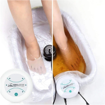

Take advantage of this discount while supplies last
This Amazing Detox Option Can Save Your Organs, Your Joints, Your Brain Which Are All Being Ruined By Toxins.

Your body has become a warehouse for all manner of chemicals, heavy metals, and other toxins.
Everything you taste, touch and breath is robbing your body of its purity. The IonPure™ foot spa is the cutting edge ionic detox foot bath you’ve been waiting for.
We are in uncertain times, and people are searching for a safe, effective way to maximize their health and vitality. More than 20,000 people have tried IonPure™ and they are beyond satisfied. They have experienced the cleansing power of a truly effective detoxing foot bath.
Join them today and let IonPure™ remove the pollution circulating through your body right now
What Are The Benefits?
Everyday, 1000’s of people are trying IonPure™ for the first time. Here’s why:
Strengthened Immune System Your immune system is the key to staying healthy and combating infections and disease. By removing toxins in your body, your immune system will be better able to fight off the viruses and more.
Better, More Restful Sleep Toxins are robbing you of restful sleep. This ionic bath detox helps free your mind of the stress and anxiety that’s been keeping you up nights.
Relief for Sore, Achy Joints Your knees, ankles, wrists, shoulders...they’re full of toxins! Your feet are the gateway to the rest of the body. This ionic detox bath helps draw out toxins through the feet to remove the massive amounts of pollution in your joints.
Increased Energy By Removing Dangerous Toxins and Heavy Metals Removing toxins from your body provides relief for your liver, kidney, and spleen. It purifies you from all the heavy metals and garbage that takes a toll on your body and steals your energy. With our industrial age, your organs are overwhelmed with chemicals from the air, water, food - you name it. Get clean with an effective detoxification.
Rejuvenates Your Youthful Looks A high quality cleanse removes the chemicals that help cause premature aging. Removing the impurities helps lower your stress and anxiety and keeps you glowing like you were 25 again.
Promotes Mental Clarity And Focus This ancient remedy helps remove the toxins that cause things like brain fog and give you the sharp focus you need to get ahead.
Reduces Inflammation This includes inflammation in your joints which can lead to all sorts of aches, soreness and discomfort.
Where Do Most Toxins Come From
Go look inside your refrigerator. Then go look outside. Then look at your liquor cabinet.
Everything around you is filling your body with pollution, pesticides, chemicals, heavy metals and more. Even most beauty products have all sorts of synthetic products that clog more than just your pores.
In fact, many cosmetics and perfumes contain parabens, formaldehyde, and aluminum, which are very harmful to the body. The after effects of all those impurities in your body is scary.
It includes organ damage, DNA damage, imbalance hormones, inflammation, a weakened immune system and more.
How Does IonPure Work?
It’s a simple process. Place your feet in the foot bath, add the ionizer and watch the transformation happen.
The IonPure™ foot spa has an ionizer which releases ions through the water and into your body. This energizes your cells and allows them to release the toxins, oils, acids, fats, heavy metals, and other cellular debris and waste.
This is a new type of detox that works at the molecular level. The ocean can purify itself after an oil spill because water is the most powerful purifying element on earth.
Sounds Amazing...Now What?
Click on "Rush My Order" right now to get the #1 answer to removing your body's toxins. Take a step toward wellness, take a step toward purity and get the IonPure™ Detox Foot Bath right now!

Exclusive Ion Pure™ Discount - 51% OFF!
This special offer is valid until: March 31, 2021